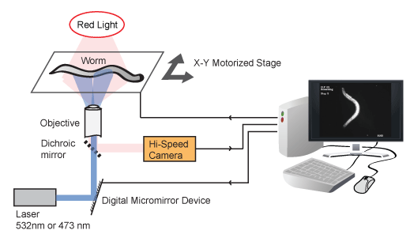

An optogenetic technique for neuroscience that uses lasers to manipulate neurocircuits in moving animals
Stephen Colbert
 The CoLBeRT project is dedicated to its namesake, Stepehn Colbert, who manipulates the neurocircuits of millions of Americans daily using only the light from their monitors. Photo (cc) MikeBrowne.
The CoLBeRT project is dedicated to its namesake, Stepehn Colbert, who manipulates the neurocircuits of millions of Americans daily using only the light from their monitors. Photo (cc) MikeBrowne.
CoLBeRT in Action
Download: File1.avi This work is licensed under a Creative Commons Attribution 3.0 Unported License.
This work is licensed under a Creative Commons Attribution 3.0 Unported License. Contact: Andrew Leifer leifer@fas.harvard.edu